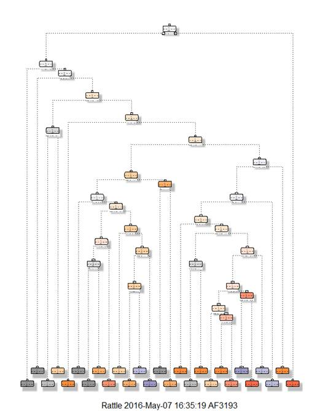

Practical Machine Learning - Final Project Report
Alina Fotache
May 8, 2016
This report is found at my GitHub repo: https://github.com/afotache/PracticalML One thing that people regularly do is quantify how much of a particular activity they do, but they rarely quantify how well they do it. In this project, your goal will be to use data from accelerometers on the belt, forearm, arm, and dumbell of 6 participants.This project uses data from these accelerometers of 6 participants, which were asked to perform barbell lifts correctly and incorrectly in 5 different ways. The data sources are specified below, in two files - a training set and a test set. The objective is to predict the manner in which they did the exercise. This is the "classe" variable in the training set. This report will explain the model, how crossed validation was used, what is the expected sample error and the reasoning behind the choices made. We will also include the results of predicting 20 different test cases.
The training data for this project are available here: https://d396qusza40orc.cloudatatrainront.net/predmachlearn/pml-training.csv The test data are available here: https://d396qusza40orc.cloudatatrainront.net/predmachlearn/pml-testing.csv The data for this project comes from this original source: http://groupware.les.inf.puc-rio.br/har.
#
Downloading training and testing files
library(RCurl)
library(caret)
library(randomForest)
trainset
<- getURL("https://d396qusza40orc.cloudfront.net/predmachlearn/pml-training.csv", ssl.verifypeer=0L, followlocation=1L)
writeLines(trainset,'training.csv')
testset <- getURL("https://d396qusza40orc.cloudfront.net/predmachlearn/pml-testing.csv", ssl.verifypeer=0L, followlocation=1L)
writeLines(testset,'testing.csv')
datatrain <- read.csv("pml-training.csv")
datatest <- read.csv("pml-testing.csv")
dim(datatrain)
## [1] 19622 160
dim(datatest)
## [1] 20 160
Now let's look at both datatrain and datatest, and when using str(datatrain) and str(datatest) we can see that the last one in datatrain is 'classe' and the last one in datatest is 'problem_id'. Both of these are to be the response variables, which means we have 159 predictor variables. We can also clean out the first seven columns, as they represent raw data and not very useful. Also, when doing data cleaning, we can also remove a lot of the variables populated with values "NA". Other variables withfew missing values, they can be appropriately replaced with numerical values (like mean or average), but no need to do this here. So we are left with 50 predictors and 1 response variable - 'classe'.
#
From datatrain, remove columns 1 through 7, columns with mostly NA values and
those with near zero variance
datatrain = datatrain[,-c(1:7)]
ColNA <- sapply(datatrain, function(x) mean(is.na(x))) > 0.95
datatrain <- datatrain[, ColNA==F]
nzv <- nearZeroVar(datatrain)
datatrain <- datatrain[, -nzv]
dim(datatrain)
## [1] 19622 53
WE've learned in the class about Random Forest and that it works best for multivariable datasets. We can also apply a parellel version of Random Forest or other data models if the Random Forest doesn't give satisfactory results. Before we can apply the Random Forest model, we need to divide the training set datatrain into two subsets - one for training and one for validation. We will splitt in 70% and 30% and refer to the training subset as datatrain_train and the validation set as datatrain_test:
set.seed(1000)
inTrain <- createDataPartition(y=datatrain$classe, p=0.7, list=F)
datatrain1 <- datatrain[inTrain, ]
datatrain2 <- datatrain[-inTrain, ]
dim(datatrain1)
## [1] 13737 53
dim(datatrain2)
## [1] 5885 53
We can also try a 60-40 split to avoid overfitting but still have enough data for training.
#
let's select optimal tuning parameters by using 3-fold cross validation
fitControl <- trainControl(method="cv", number=3, verboseIter=F)
fit <- train(classe ~ ., data=datatrain1, method="rf", trControl=fitControl)
fit$finalModel
##
## Call:
## randomForest(x = x,
y = y, mtry = param$mtry)
## Type
of random forest: classification
##
Number of trees: 500
## No. of variables
tried at each split: 27
##
## OOB estimate
of error rate: 0.76%
## Confusion matrix:
## A B C
D E class.error
## A 3900 5 0
0 1 0.001536098
## B 24 2629 4
1 0 0.010910459
## C 0 14 2372
10 0 0.010016694
## D 0 2 26
2220 4 0.014209591
## E 0 0 5
8 2512 0.005148515
To view the decision tree using fancyRpart you can run this commands: fancyRpartPlot(fit, palettes=c("Greys", "Oranges"))

Now let's predict the 'classe' and see the confusion matrix to test the results:
#
Predict classe for datatrain2
predicts <- predict(fit, newdata=datatrain2)
confusionMatrix(datatrain2$classe, predicts)
##
Confusion Matrix and Statistics
##
## Reference
## Prediction A B
C D E
## A 1672
2 0 0 0
## B 9
1129 1 0 0
## C 0 6
1017 3 0
## D 0
0 13 950 1
## E 0
1 0 7 1074
##
## Overall Statistics
##
##
Accuracy : 0.9927
## 95%
CI : (0.9902, 0.9947)
## No Information
Rate : 0.2856
## P-Value [Acc
> NIR] : < 2.2e-16
##
##
Kappa : 0.9908
## Mcnemar's Test
P-Value : NA
##
## Statistics by Class:
##
##
Class: A Class: B Class: C Class: D Class: E
##
Sensitivity 0.9946 0.9921 0.9864 0.9896 0.9991
##
Specificity 0.9995 0.9979 0.9981 0.9972 0.9983
## Pos Pred
Value 0.9988 0.9912 0.9912 0.9855 0.9926
## Neg Pred
Value 0.9979 0.9981 0.9971 0.9980 0.9998
##
Prevalence 0.2856 0.1934 0.1752 0.1631 0.1827
## Detection
Rate 0.2841 0.1918 0.1728 0.1614 0.1825
## Detection
Prevalence 0.2845 0.1935 0.1743 0.1638 0.1839
## Balanced
Accuracy 0.9971 0.9950 0.9923 0.9934 0.9987
We observe accuracy = 99.24%, and predicted accuracy for the out_of_sample error is 0.76%.
We see that Random Forest provides a good fit based on the training set datatrain. Now let's apply it to test set datatest consisting of 20 rows.
#
function to write the 20 files as suggested in instructions
predicts <- predict(fit, newdata=datatest)
predicts <- as.character(predicts)
pml_write_files <- function(x) {
n <- length(x)
for(i in 1:n) {
filename <- paste0("problem_id_", i, ".txt")
write.table(x[i], file=filename, quote=F, row.names=F, col.names=F)
}
}
pml_write_files(predicts)
predicts
##
[1] "B" "A" "B" "A" "A"
"E" "D" "B" "A" "A"
"B" "C" "B" "A" "E"
"E" "A"
## [18] "B"
"B" "B"
1.We downloaded the data, did some data cleaning to remove columns that we're not impacting the model, variables with values 'NA' exceeding 95% of all of their values were chosen to be retained.
2. We splitt training data in two sets (for training and validation purposes using 70-30 split).
3. Started with Random Forest as the best model for multivarible problems, and we got very good accuracy and very small out_of_sample error. So we concluded that Random Forest provides the model for this project. Also available is the parallel version of Random Forest.
4. 3-fold cross validation was chosen because 2, 4, or 5-fold cross validations did not produce any improvements. And performance time was also higher.